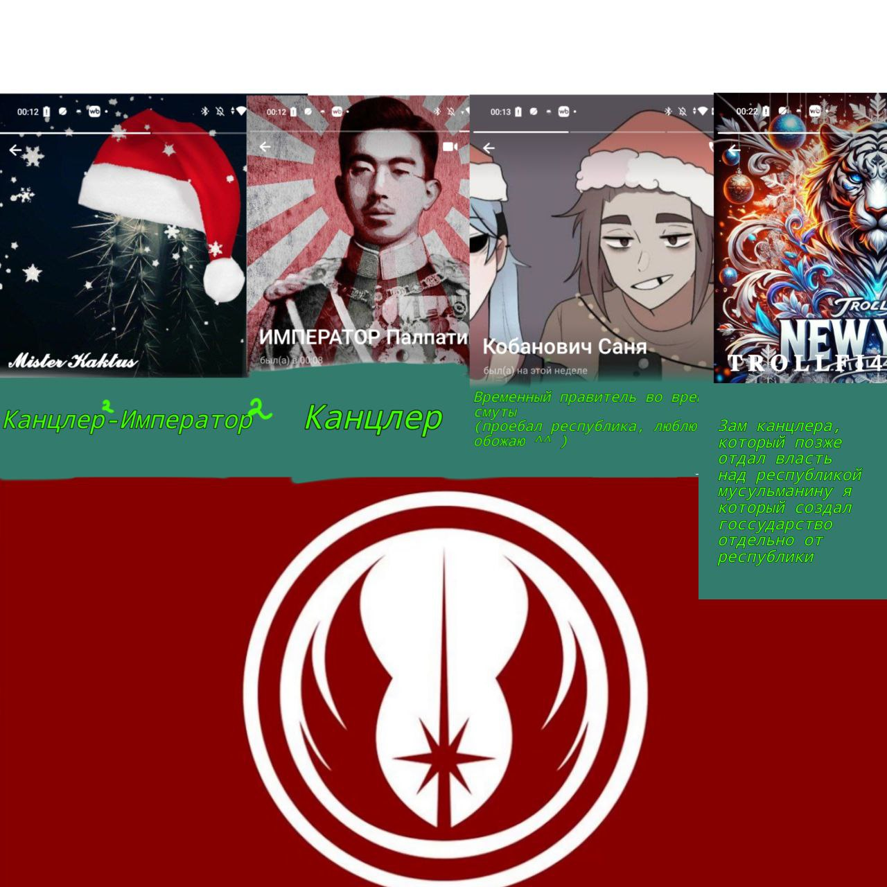

Республика
Внимание! Республика признана экстремисткой организацией на территории Ордена Торговцев.

История
Республика была оффициально создана 13.04.2024, 23:25.
После чего, её лидером стал Topkaktus.
При нём республика расширила свои территории на столько, что она стала "Имперской республикой" после чего кактус стал её императором. Её ТТ занимала 1-10 от всей территории что помещалась на карте 4 уровня. Кактус поднял как экономическое и военное дело, так и политическое. Республика стала контралировать весь сервер. После 08.05.2024 была первая война республики, против Золотой орды, в которой, республика одолела орду не потерплю потерь. После Topkaktus ушёл в отставку
И ВРУЧИЛ БРАЗДЫ ПРАВЛЕНИЯ Жопахеру, который стал канцлером республики. Долго он не правил, после чего на сервере произошёл глобальный терракт, в котором республика пострадала больше всех и сервер был вайпнут.
После Topkaktus возвратил республику из пучины забытого. 02.08.2024.
Тогда республика не имела больших территорий, но всё же стала самой сильнейшей империей, у которой не осталось конкурентов после войны с разбойниками.
После произошёл вайп сервера, Topkaktus снова возвратил республику через несколько дней (дата неизвестна) но под новым правлением партии республики (ДПР).
Это было тяжёлое время для всей республики, из за того, что у нынешнего главы партии (кактуса) была затяжная депрессия, он не мог нормально раздавать приказы и нормально отдать приказ для строительства столицы. Не достроив столицу, кактус ушёл в отставку, где на его пост встал "сансич-кобанович Саня) который не смог справиться с правлением и развалил республику.
Через месяц Республика была возвращена (даты не известны) .
На этот раз она продержалось очень мало, всего 5 дней, из 3 которых правил Topkaktus, но был вынужден был сложить свои полномочия на время и оставил власть своему заму троллфичку. Зам на удивление кактуса, отдал бразды правления (помощнику) кактуса, который отделился от республики и создал отдельное госсударство.
Потом была опять неудачная попытка вернуть республику.
Всё из за той же депрессии кактуса он не смог долго править и забил большой африканский пенсил.
Наши дни, республика снова созданна всё под тем же кактусом.